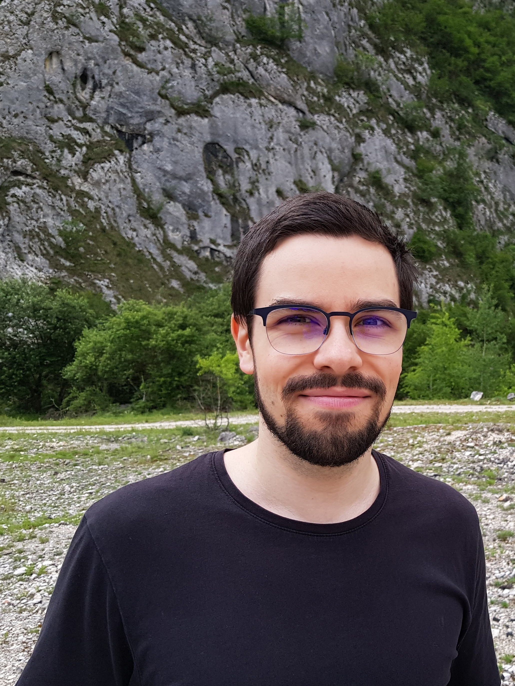

Sebi is a World of Warcraft veteran. He started playing in vanilla. Even though most of the time played was on unofficial servers, he gave retail WoW a shot at the end of Warlords of Draenor and he is still salty about not completing the Gold Challenge Mode since he was too fresh for that. Some of the more notable achievements so far include being a shaman class leader in vanilla (healer spec), pushing for the Burning Crusade raid attunements (including raiding) and fast forward to Legion going for the Mage Tower challenges. Being more of a independent player post-TBC he wants to come back to the social aspect of the game and contribute to the best of his ability towards a nice community and push those M+ keys and Mythic Raids. He is a very chill guy who loves to lend a helping hand whenever needed.